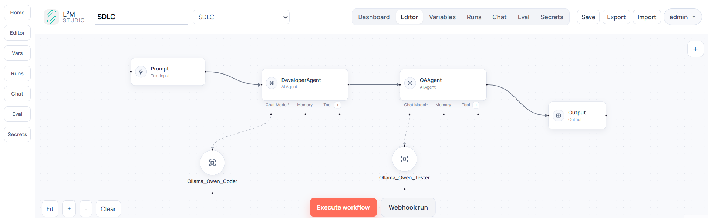

Branching DAG Engine
Topological execution with `if`, `switch`, and `try/catch` for controlled, readable AI logic.
Visual AI Automation
L2M helps teams design, execute, monitor, and automate production-ready AI workflows with deterministic branching, guardrails, human approvals, and full execution traceability.
Studio Preview

Capabilities
Topological execution with `if`, `switch`, and `try/catch` for controlled, readable AI logic.
Persistent audit logs with node-by-node trace for debugging, compliance, and quality review.
Pause on approval nodes, serialize state, and resume safely after approve or reject decisions.
Validate input and sanitize model output with deterministic checks and configurable failure behavior.
SSE-powered chat interface in-studio and an embeddable widget for external websites.
Run custom JavaScript transforms in a VM-isolated execution step with timeout controls.
Batch 5
Add a `schedule_trigger` node to run workflows every day, every 15 minutes, or any cron interval with timezone support.
0 9 * * *
Daily standup summary
*/15 * * * *
Quarter-hour monitoring loop
0 0 * * 1
Weekly Monday report
Stack
L2M is open-source and built for teams that want transparent AI workflow logic instead of opaque chains.